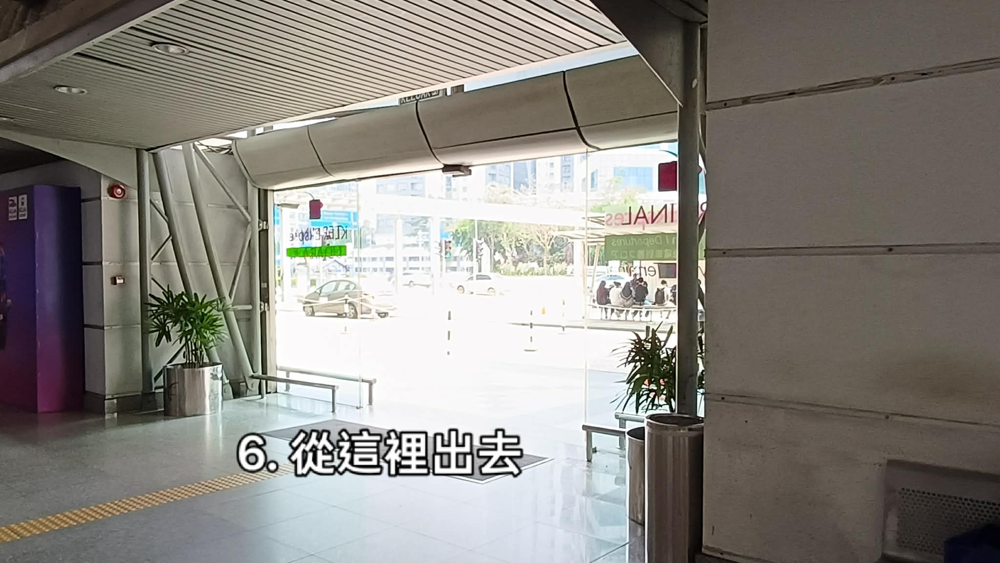
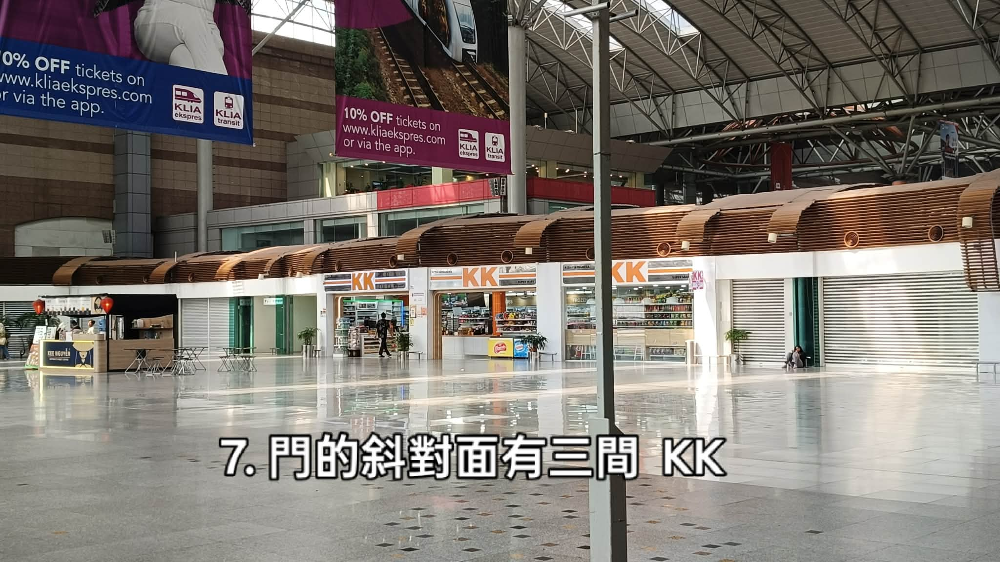
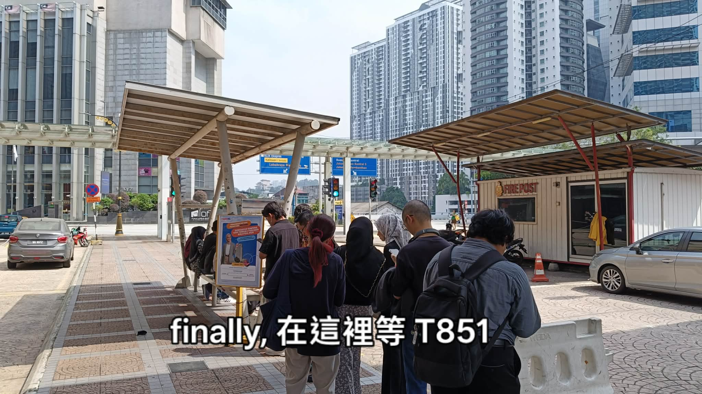

KL Sentral KLIA Ekspres Hall Bus T851 Bangunan Parlimen
從 KL Sentral 搭 T851 接駁巴士去馬來西亞國會大廈
難的不是坐車，是在 KL Sentral 裡找到那個站牌。八張現場照片，一步一步走到 T851 的候車亭。 Eight on-the-ground photos: through KL Sentral to the T851 shuttle stop for the Malaysian Parliament.
穿過 KL Sentral 到出口
步驟 1 – 5-
1 WELCOME TO NU SENTRAL大廳中央的手扶梯，最好認的起點
站到 NU Sentral 手扶梯正前方，再轉向右手邊的 KLIA Ekspres 入口 Stand facing the NU Sentral escalators, then head right to the KLIA Ekspres entrance

先把自己帶到這面大螢幕與手扶梯前面——寫著 WELCOME TO NU SENTRAL，是整個大廳最好認的地標，走丟了就回到這裡重來。
面向手扶梯站好之後，往右前方走（照片裡星星閃爍的那個方向），那裡是通往 KLIA Ekspres 的通道口。
LOOK不是要搭機場快線，只是借這條通道走到另一邊的出口——T851 的站牌在 KL Sentral 的那一側，從這裡穿過去最快。
-
2 BALAI PERLEPASAN KLIA EKSPRESKLIA Ekspres Departure Hall
從粉紅色招牌底下走進去 Walk in beneath the pink departure-hall sign

看到這面亮粉紅色的招牌就對了：Balai Perlepasan KLIA Ekspres 是馬來文，下面的英文 KLIA Ekspres Departure Hall 說的是同一件事。直接從招牌下方走進去。
裡面有一塊小牌子寫 Platform Tren，箭頭朝下指向月台手扶梯——不要下去，那是搭機場快線用的，我們要留在這一層。
LOOK右手邊紅底白字的 CURRENCY EXCHANGE 換匯櫃檯。這是進門後的第一個確認點。
-
3 DAFTAR MASUK PENERBANGANFlight Check-in
抬頭看指示牌：往前直走，然後轉右 Read the overhead sign — straight ahead, then turn right

進來以後抬頭，一面白色指示牌把三個方向都寫清楚了：
← Train Platform 月台 · ↑ Customer Service 客服 · ↗ Flight Check-in 登機報到跟著右上角的 Daftar Masuk Penerbangan 方向走：先往前直走，再轉右。我們不辦登機，只是借這個方向往外走。
LOOK左邊那排紫色驗票閘門是搭火車用的，不要刷票進去，進去了就得再出來。
-
4 LUGGAGE CENTRAL行李店櫃檯 · 走對路的證明
看到藍色的 LUGGAGE CENTRAL，就表示沒走錯 Passing the blue LUGGAGE CENTRAL counter means you are on track

轉右之後，前方會出現藍色招牌的 LUGGAGE CENTRAL，左邊擺著兩台按摩椅。
這是路上的確認點：看到它就繼續往前。沒看到的話，退回步驟 3 的指示牌重新找一次。
LOOK這一段右側是整面落地窗，白天光線明顯比剛才的通道亮很多，走進來會感覺「突然變亮了」——這表示外面就快到了。
-
5 KL CITY AIR TERMINALCounters 11 – 16 · 直接走過去
經過整排報到櫃檯，不用停，繼續往外走 Walk past the check-in counters — no need to stop here

右手邊整排粉紅色行李箱圖示的號碼牌，從 11 排到 16，這裡是機場的市區預辦登機區 KL City Air Terminal。
這區跟我們的行程無關，不用排隊、不用理會自助機。沿著櫃檯前面的走道繼續往前，前方的玻璃門就是出口。
LOOK看到自助報到機（Self-Service Check-in & Baggage Drop）就代表你在正確的走道上，出口在這排櫃檯的另一端。
出站走到 T851 候車亭
步驟 6 – 8-
6 KELUARExit · 玻璃門通向戶外
從這道玻璃門走出去 Head out through this glass doorway

走道盡頭是一整片落地玻璃門，外面看得到馬路、停著的車，以及對面有頂棚的候車區。從這裡出去。
出去之後就離開冷氣區了，接下來都是半戶外——天氣熱的話，先在門內把水拿出來、戴好帽子再出去。
LOOK門上的文字從裡面看是反的，那是給外面進來的人看的 Departures 指示。左邊的紫色柱子是這道門最好認的標記。
-
7 KK SUPER MART 3門的斜對面 · 大挑高候車大廳
斜對面有三間連在一起的 KK，看到就是方向對了 Three KK Mart storefronts sit diagonally opposite the door

出了門往斜對面看，會看到三間連在一起的 KK 便利商店（KK Super Mart），旁邊還有一個飲料攤。這是整段路最明顯的地標。
上方懸掛著 KLIA ekspres 與 KLIA transit 的折扣布條，抬頭就看得到——確認自己還在 KL Sentral 的範圍內，沒有走偏。
LOOK要買水、買零食就趁現在，站牌那邊沒有商店。買完往 KK 的左前方繼續走出去，就是巴士候車亭。
-
8 PERHENTIAN BASBus stop · T851
在這個有遮陽棚的候車亭等 T851 Wait for the T851 under the covered shelter

到了！兩座木頂遮陽棚、旁邊一間紅色的 FIRE POST 小屋，通常已經有人在排隊——就在這裡等 T851。
路口的藍色路標寫著 KLIA Ekspres Ketibaan / Arrivals、Lebuhraya Mahameru、Jalan Stesen Sentral 5，對街是 Aloft Kuala Lumpur Sentral 飯店。四個都對得上，就是這裡沒錯。
車來的時候看車頭的路線號碼與終點顯示，確認是 T851 再上車；不確定就直接問司機一句「Parlimen?」。
LOOK排隊的人多半是本地通勤族，跟著隊伍站就好。若站牌下有臨時改道公告，以現場公告為準。
上車前先準備
- 先備好 Touch ’n Go。
- 接駁巴士刷卡最快，也不用擔心找零。出發前先確認卡片餘額；若打算付現金，先換好小鈔硬幣，部分路線不找零。
- 班距抓寬一點。
- 接駁線的班距會隨時段變動，尖峰之外可能等比較久。用 Google Maps 或 Moovit 查即時班次，預留緩衝時間，別卡著參觀時間出門。
- 國會大廈不是隨到隨進。
- 馬來西亞國會大廈（Bangunan Parlimen Malaysia）參觀通常需要事先申請，並且有安檢與證件查驗。開放時間、申請方式請以國會官方公告為準，臨時前往很可能被擋在門口。
- 服裝要正式。
- 國會對服裝規定相當嚴格：建議穿有領上衣與長褲、包鞋；短褲、無袖、拖鞋、牛仔褲都可能被拒絕入內。天氣再熱也要照規定穿。
- 回程也在同一區。
- 回 KL Sentral 的站牌不一定在下車的同一側，下車時先看清楚對向站牌的位置，或先問司機回程在哪裡搭。